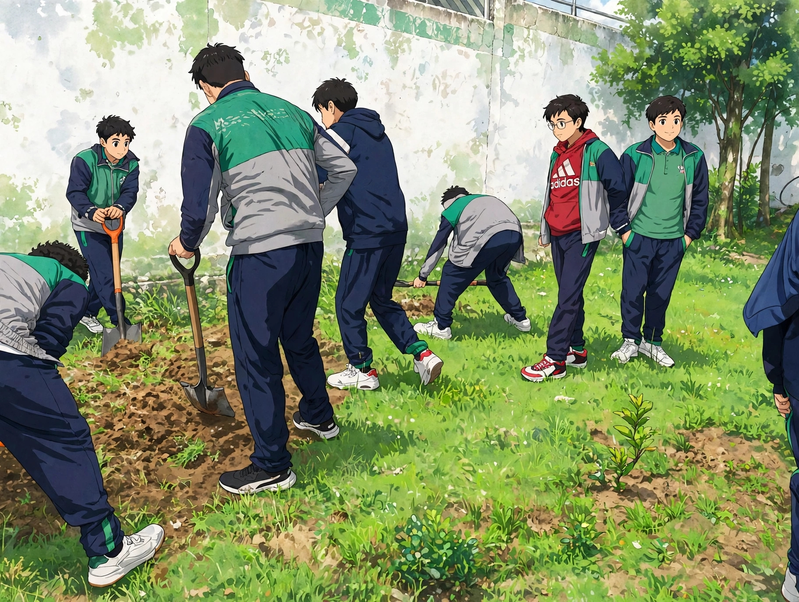
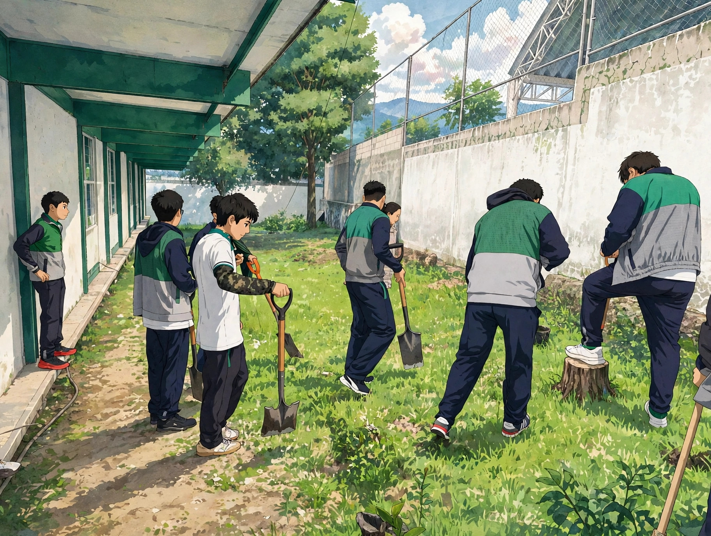
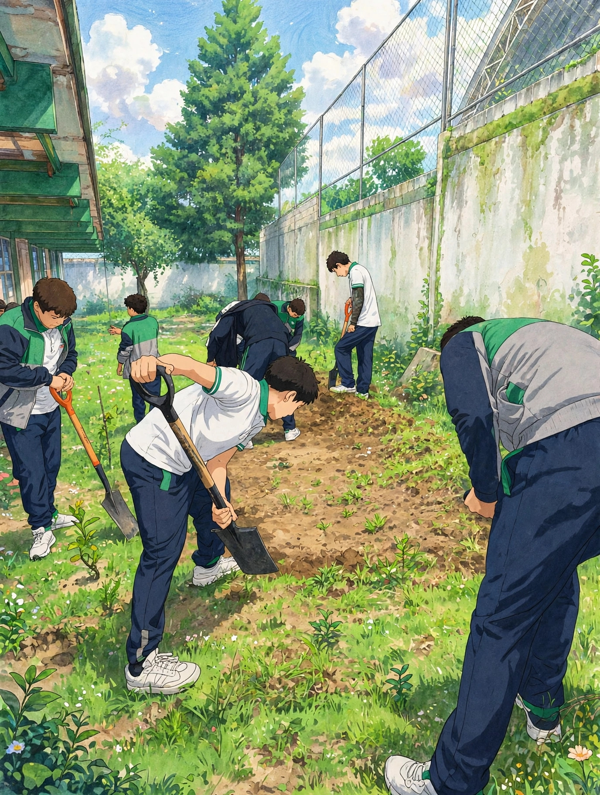
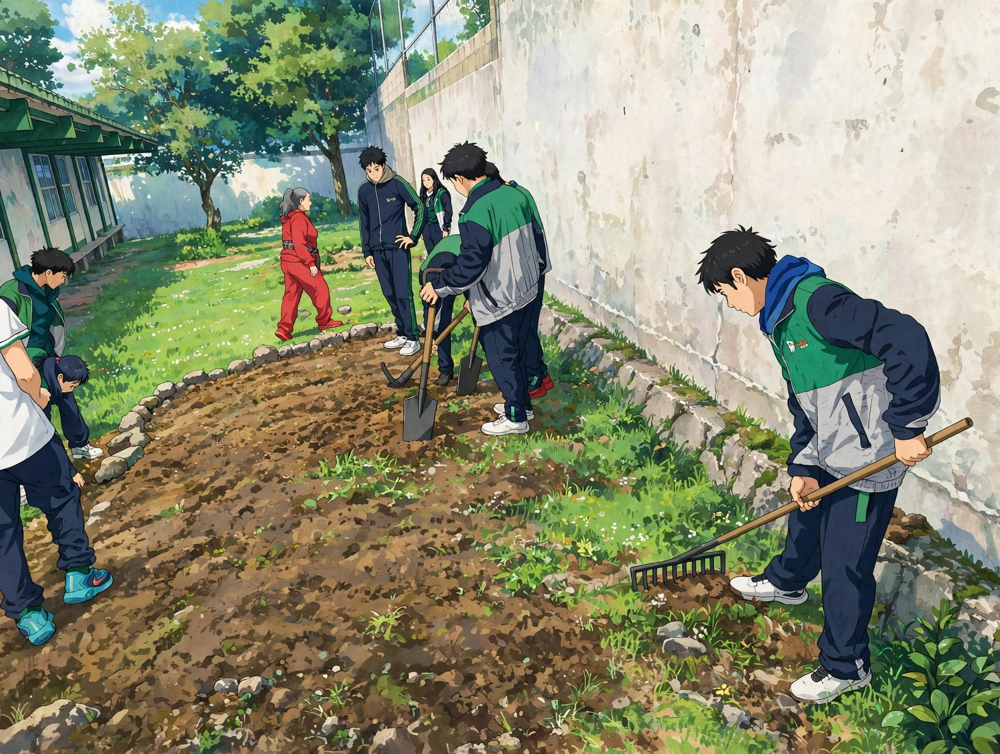
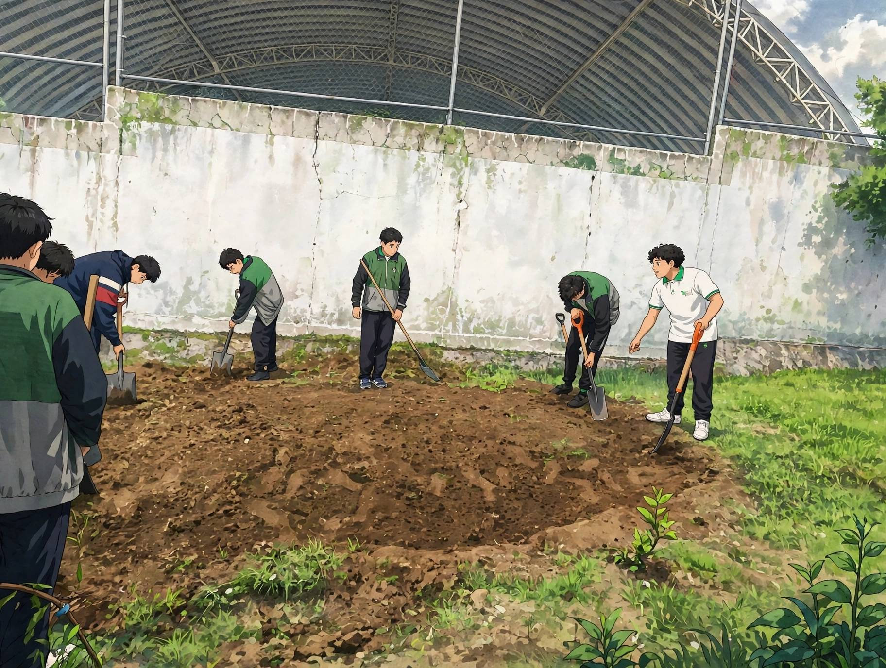
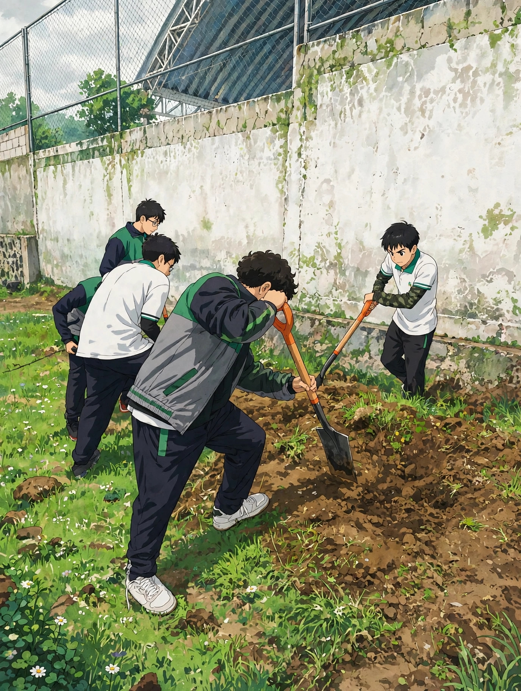
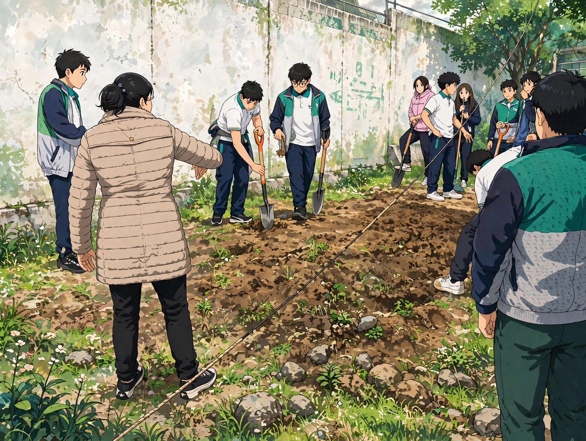
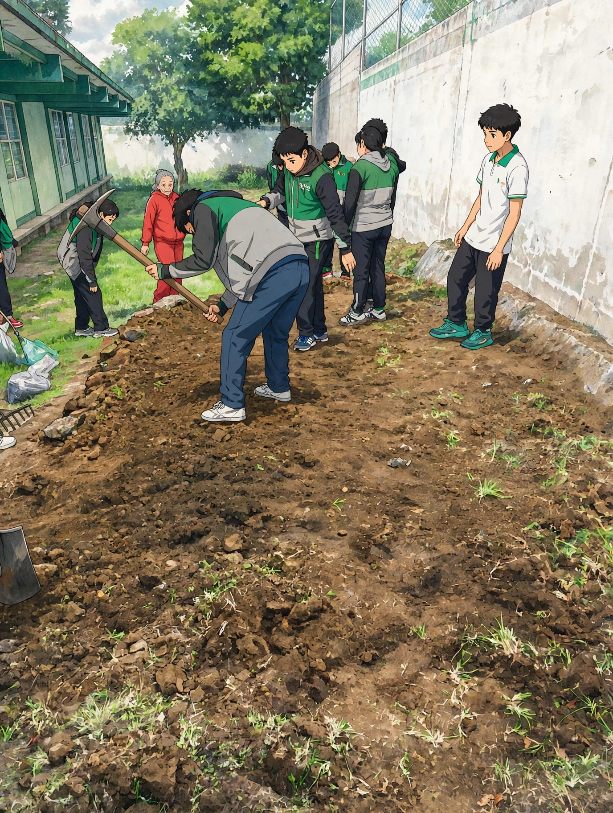

Etapa 1
Reconocimiento del espacio
Se observa el área disponible para identificar el lugar donde se instalará el jardín y planear su distribución.
Pequeños espacios, grandes cambios. Descubre cómo las plantas con flores ayudan a atraer polinizadores y contribuyen al cuidado de la biodiversidad.
Conoce nuestro proyectoEs un espacio con plantas que ofrecen néctar, polen y refugio a animales como abejas, mariposas y otros polinizadores. Crear uno ayuda a favorecer la biodiversidad y a valorar la importancia de las plantas en nuestro entorno.
Conoce las etapas de preparación del terreno para establecer nuestro jardín polinizador. Cada fotografía muestra una parte del trabajo realizado.

Se observa el área disponible para identificar el lugar donde se instalará el jardín y planear su distribución.

Se retiran los residuos y los materiales que puedan obstaculizar la preparación del espacio.

Se trabaja la superficie para facilitar el establecimiento de las plantas y mejorar las condiciones de crecimiento.

Se define dónde colocar las plantas, considerando el espacio disponible y las necesidades de cada especie.

Se realizan los ajustes necesarios para dejar el terreno preparado antes de colocar las plantas.

Se revisa el espacio y se completan las tareas pendientes para continuar con la instalación del jardín.

Se planea la ubicación de las plantas para aprovechar el espacio y crear un entorno con flores atractivas para los polinizadores.

Se concluye la preparación del área para avanzar hacia el establecimiento y cuidado de las especies seleccionadas.
La bugambilia y la lantana aportan color al jardín. Sus flores pueden contribuir a atraer distintos visitantes, dependiendo de la especie, la temporada y las condiciones del lugar.

Esta fotografía muestra las plantas reunidas para formar un espacio lleno de color. La combinación de especies y flores puede ofrecer recursos a los polinizadores durante distintas épocas del año.

La bugambilia es una planta ornamental conocida por sus brácteas de colores intensos, como rosa, magenta y morado. Sus pequeñas flores verdaderas se encuentran en el centro de estas estructuras. Aporta color y puede complementar un jardín para polinizadores.

La lantana produce agrupaciones de pequeñas flores que pueden presentar varios colores. Dependiendo de la especie y de las condiciones locales, sus flores pueden proporcionar néctar a mariposas y otros visitantes florales.
Escucha nuestros audios para conocer más sobre los jardines polinizadores, las plantas y la importancia de cuidar el ambiente.
Introducción a los jardines polinizadores.
Mira el video para conocer más sobre el proceso y las actividades realizadas para crear el jardín polinizador.
Video: preparación y desarrollo del jardín polinizador.
Consulta y descarga documentos complementarios sobre el proyecto.
Información y actividades del jardín polinizador.
Descargar PDFDescarga una ficha informativa sobre las plantas del jardín.
Descargar fichaPlantar especies adecuadas para nuestra región, cuidar las flores, evitar el uso innecesario de pesticidas y mantener espacios verdes saludables son acciones que ayudan a proteger la biodiversidad. Cada jardín puede convertirse en una oportunidad para aprender y contribuir al cuidado de la naturaleza.